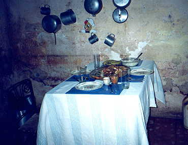

If you invited me to your house...
by Mona
And for ornaments in your living room, you had two empty Cola cans, I wouldn't dream of criticizing your taste.
If you invited me to your house...
And opened the fridge, and all I saw in it was a half a bottle of jugo, and you offered me some, maybe I would accept, but more likely I would say, no thank you, and later when you asked me "Quieres agua?", I would accept.
If you invited me to your house...
And gave me the central chair, and it was hard and wooden and uncomfortable and newly painted, I would remark on the nice paint job, not the discomfort.
If you invited me to your house...
And it was July 26 and you were celebrating, not the revolution, but the day off, and invited me to a very special meal. And told me it was caldosa, and said my hosts had spent most of the day preparing it; and days before looking for the ingredients, such as yuca, calabaza, papas, maiz, platano, menudos de pollo, carne de chivo y condimentos.
And it was a special day and a special meal, but it looked to me like brown gruel, and it was full of huesos de pollo, but MY portion had what looked like a half ear of field corn, which I cannot digest, because of digestion problems that developed after one of my trips to Africa.
I would accept the food, and I would eat it, but I would tell you my stories of Africa, and about my little digestion problems, because then I would have a reason NOT to eat the best tidbit in the stew.
If you invited me to your house...
You would warn me that there were pedacitos of chicken bone in this meal, and it was dangerous, and I should be careful. I would thank you, and keep eating. And I would spit out the pedacitos of hueso as graciously as I could, like you were doing, after you showed me how to aprovechar every bit you can get. I would appreciate your company and accept your food.
If you invited me to your house...
And you had your refrigerador in the living room, I would admire it, because it is a very important possession, like a ventilador, as well as a good topic of conversation.
If you invited me to your house...
And you showed me your new television that you bought in la tienda, with money that your father who lives in Tampa, and you haven't seen in 30 years, sent to you; and told me you haven't had muchas noticias from him. And you showed me una foto of him and his new wife in Florida, who looks 10 years younger than you. I would admire your new TV, and gratefully take your carta for your padre to Canada, so I could mail your thanks to him.
If you invited me to your house...
And it was in the reparto Centro Habana, and you pointed to the ceiling in your living room and showed me a big hole where the ceiling was crumbling, and that was your upstairs neighbour's floor. And they were worried the whole place was going to cave in. And you were worried about exactly the same thing. And cement costs about $25 USD for a wheelbarrowful, or maybe two. And it was un problema grande. And you and your neighbours tenian miedo that the whole building was going to collapse. I would commiserate with you, and neither of us would be able to ver la solucion.
If you invited me to your house...
And your husband was a bartender at an expensive hotel in Havana, and made $100 USD in tips, and you had family en el extranjero. And you still had a little plastic Christmas tree with lights that blinked on and off, and it was in a place of honour in the living room, because you were SO rich, that you actually had YOUR refrigerador in the kitchen.
And you are my vecina, and you are SO pretty. And you have a VCR, and I wondered, where else but Cuba still uses Beta? BUT there is NO water in the neighborhood. And US dollars can't fix that.
And I have un problema, and I would like to find plumbing that works. And so you took me to your suegra's house, because she too, lives in Miramar, but she doesn't have the same water problems.
I would admire your arbolito, but even more I would say THANK YOU for the use of functioning plumbing, but most of all, for your amistad.
If you invited me to your house...
And you always offered me everything you had, however small or large. And you seemed so pleased with my company, and my friendship, and my attempts at conversation, in a language that I am still learning.
And my interest in your life... Well, I wouldn't tell you how bad your life is. I wouldn't talk about lack of freedom, etc., because...
If you invited me to your house...
I would be SO pleased, por la oportunidad de conocerte.